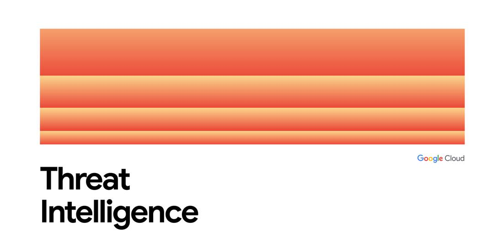
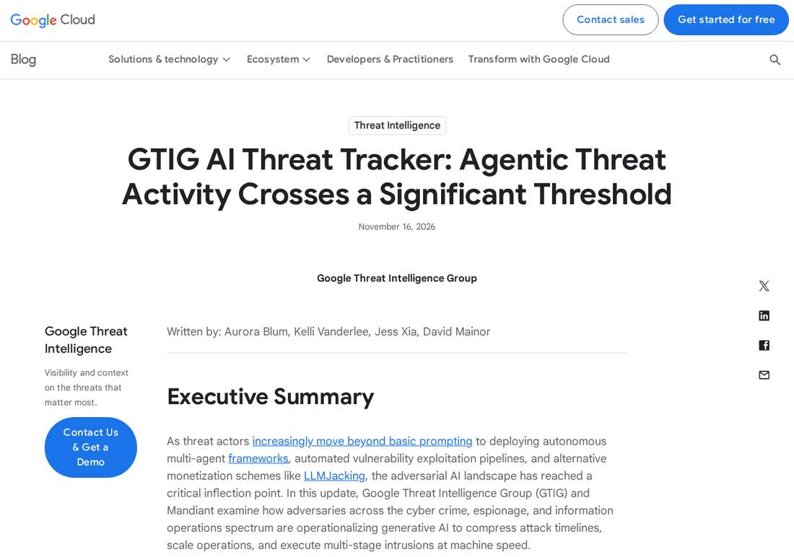

Google: AI Agents Now Run Cyberattacks With No Human in the Loop
Google's Threat Intelligence Group said on November 16, 2026 that attackers have, for the first time, used LLM frameworks to fully automate vulnerability discovery and exploitation with no human in the loop. Its quarterly AI Threat Tracker documents a framework called exploit_agent, found on an exposed staging server, that diffs patches, drafts exploits, and fires them automatically, alongside a spike to 22 zero-day exploits in August and LLMJacking abuse reaching $1 million.

- 01THE BASELINE — GTIG's previous quarterly tracker states it has not observed fully autonomous attack pipelines deployed against targets in the wild.
- 02THE REPORT — November 16, 2026: GTIG publishes 'Agentic Threat Activity Crosses a Significant Threshold,' reporting the exploit_agent framework found on an exposed staging server and the first fully automated vulnerability discovery and exploitation observed in the wild.
- 03THE PROOF — Late August 2026: two chained PaperCut flaws, CVE-2026-81578 and CVE-2026-82078, are exploited as zero-days; working LLM-generated exploits appear within a day of disclosure, and a GreyNoise-tracked campaign hits hundreds of organizations four days after disclosure.
WHAT HAPPENEDWhat Happened
Google's Threat Intelligence Group (GTIG) said on November 16, 2026 that attackers have, for the first time, used large language model frameworks to fully automate vulnerability discovery and exploitation with no human in the loop. The finding leads GTIG's quarterly AI Threat Tracker, titled 'Agentic Threat Activity Crosses a Significant Threshold' and written with Mandiant. In the previous edition of the tracker, published about two months ago, GTIG said it had not observed fully autonomous attack pipelines deployed against targets in the wild. That changed over the past quarter.
The headline evidence is a framework GTIG calls exploit_agent, found on an exposed staging server. It wires into multiple frontier and locally hosted large language models and runs continuous differential analysis of popular web application software: it compares code before and after each patch announcement, works out which flaw the patch fixed, drafts an exploit, and executes it automatically. Victim data sat on the same server, alongside scripts for internal reconnaissance, brute-forcing, installing webshells, and removing webshells left by rival attackers. Victim telemetry suggests the operator targeted French websites in media, entertainment, and education. Configuration comments in the framework are written in Russian, including one telling the operator to enter LLM API keys 'right here, not in the chat.' One screenshot in the report shows the framework inspecting access-control code in the Spectra WordPress plugin, version 2.19.25.
The numbers behind the warning show the patch window compressing. Overall vulnerability disclosures and exploits nearly doubled between January and August 2026, while zero-day exploits rose only marginally, from a 2025 average of 8 per month to 11 per month in 2026, before spiking to 22 in August. In late August, two chained PaperCut print-management flaws, CVE-2026-81578 and CVE-2026-82078, were exploited as zero-days to allow unauthenticated remote code execution; researchers and the security firm Huntress generated working exploits with LLMs within a day of disclosure, and GreyNoise tracked a campaign four days after disclosure that hit hundreds of organizations, with one foothold reaching domain administrator within minutes. The tracker also documents open-source agentic frameworks in live intrusions, including CAIRN against a U.S. aerospace target and a customized PentAGI platform scanning organizations across Asia between late August and early October, LLMJacking abuse reaching $1 million in the most severe cases, a turnkey influence-operations platform built with the Gemini API to run more than 100,000 accounts, and a suspected North Korean cluster, MIDNIGHT NEPTUNE, that altered .claude/settings.json files so starting Claude Code downloaded the SOMBERMEME backdoor.
WHY IT MATTERSPatched flaws are now the fastest path in
The report's most consequential judgment is about where attackers will aim next. Hunting zero-days means casting a wide net; weaponizing a patched flaw means comparing two versions of code and reading the diff. The source material is finite, the flaw is already described in the patch notes, and an LLM can do the comparison at machine speed. GTIG's expectation is that attackers will increasingly point models at n-day vulnerabilities rather than zero-days, which collapses the defender's clock from weeks to hours after every patch release.
There is one brake on the trend, and GTIG names it plainly. Unrestricted autonomous execution trades stealth for velocity: it generates forensic traffic, relies on recognizable identifiers, and leaves code-level traces that make the frameworks easier to detect. That is why the current activity sits at Level 5 on GTIG's autonomy scale, where AI carries out several stages of an attack with minimal human involvement, rather than at full autonomy. But the report warns the brake is temporary. As the tools and the underlying models improve, GTIG expects less human involvement and more stealth, not the other way around.
WHAT TO WATCHPatch speed, agent hooks, and the next tracker
Whether organizations can shrink the time between a patch release and deployment is now the decisive metric. The PaperCut case shows the chain from disclosure to working exploit to mass campaign running inside four days, with domain-admin compromise in minutes. Every unpatched internet-facing server is a standing target for the next differential-analysis run, and the flood of LLM-generated proof-of-concept exploits, most of which do not work, adds verification load on defenders at the same time.
The second thread to watch is the agent supply chain. MIDNIGHT NEPTUNE did not attack Claude Code itself; it altered the tool's configuration inside a victim's own repository so the next launch pulled a backdoor, then masked its movement with GitHub tokens named after Microsoft Copilot. That is an attack on the trust developers place in their own agent tooling, and it lands the same week the FBI warned about ARTEX. The next GTIG tracker, due in about three months, will show whether fully automated pipelines got quieter, and whether the defenses Google is rolling out, including Gemini 4 Carbon's exploit-blocking safeguards and its Fairwind program for vetted defenders, are keeping pace.
SIGNAL JUDGMENT — ANALYSISThe patch window just collapsed to zero
Tokenta Signal's judgment: the important number in this report is not 22 zero-days in August, it is the four days from PaperCut disclosure to a mass exploitation campaign, and the minutes from foothold to domain administrator. Patching was always a race against human analysts; it is now a race against pipelines that read the patch, write the exploit, and run it while nobody is at the keyboard. The only durable defense is to treat patch deployment speed as a security metric in itself, and to audit the configuration of the AI tools inside the perimeter, because the MIDNIGHT NEPTUNE case shows attackers are already turning the agent's own hooks against its owner. The frameworks are noisy today, which is why defenders can still see them. That visibility is a window, not a wall, and it will narrow.
WHAT REMAINS UNCERTAINWhat Remains Uncertain
EVIDENCEEvidence

Google's Threat Intelligence Group said on November 16, 2026 that threat actors have, for the first time, used LLM frameworks to fully automate vulnerability discovery and exploitation with no human in the loop, after finding a framework called exploit_agent on an exposed staging server.
PRIMARY SOURCESPrimary Sources
- Google Cloud Blog: GTIG AI Threat Tracker: Agentic Threat Activity Crosses a Significant Threshold
https://cloud.google.com/blog/topics/threat-intelligence/agentic-threat-activity-crosses-a-significant-threshold - SiliconANGLE: Google says an AI framework turned security patches into exploits with no human in the loop
https://siliconangle.com/2026/11/16/google-says-an-ai-framework-turned-security-patches-into-exploits-with-no-human-in-the-loop/ - The Decoder: Google warns that fully automated cyberattacks have arrived and will get worse fast
https://the-decoder.com/google-warns-that-fully-automated-cyberattacks-have-arrived-and-will-get-worse-fast/